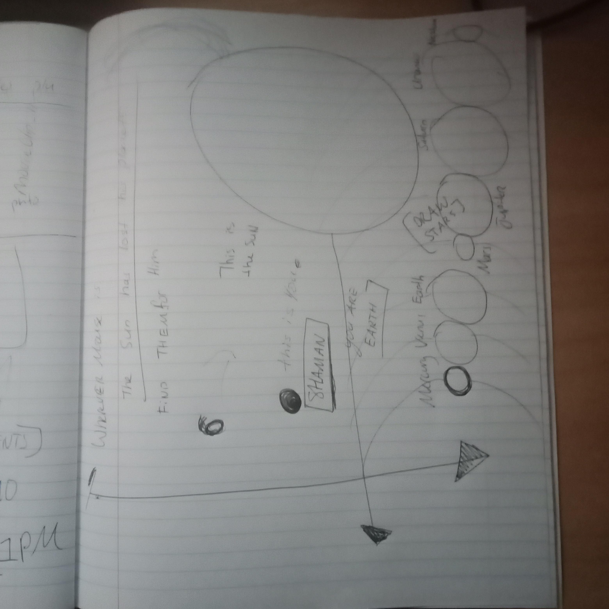
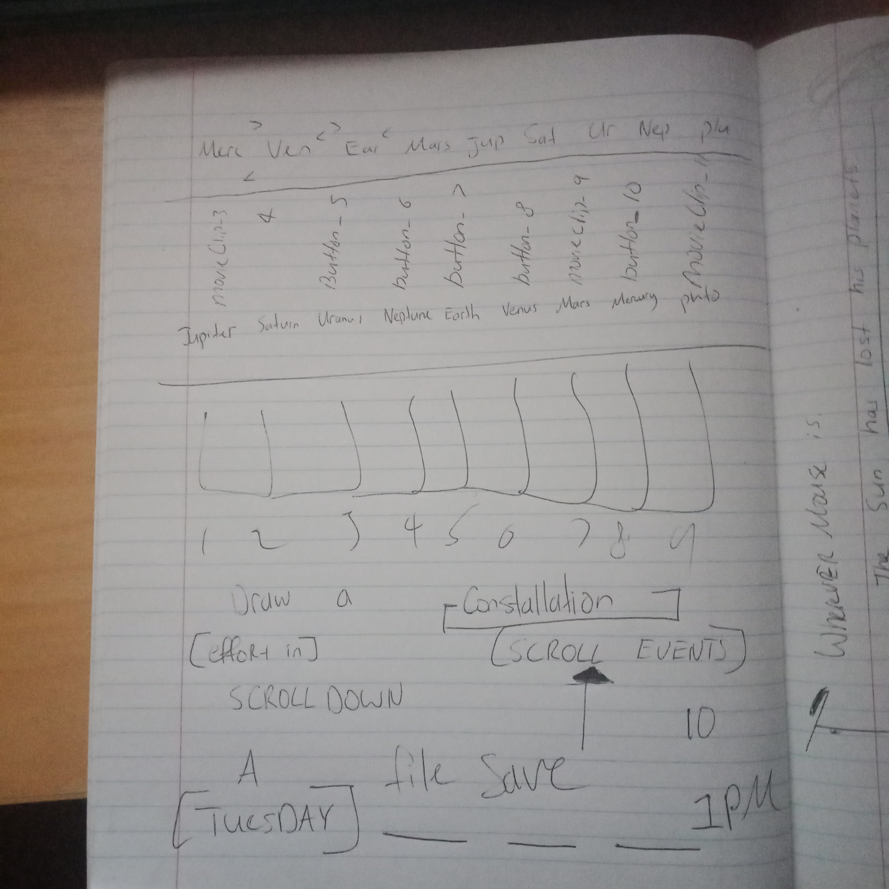
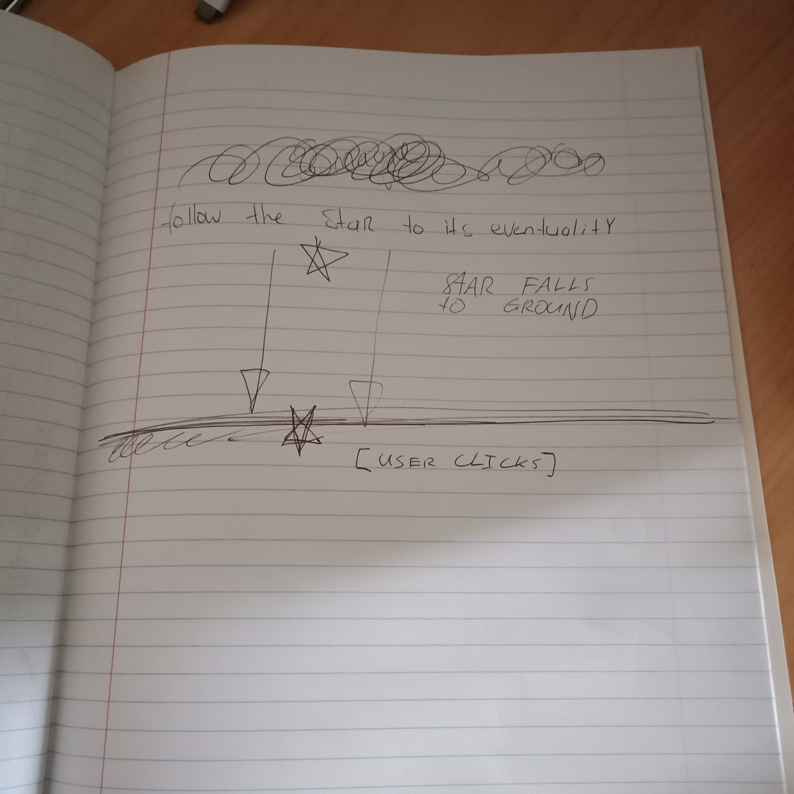
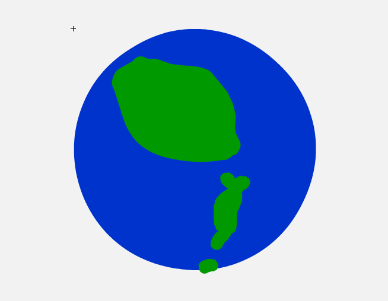
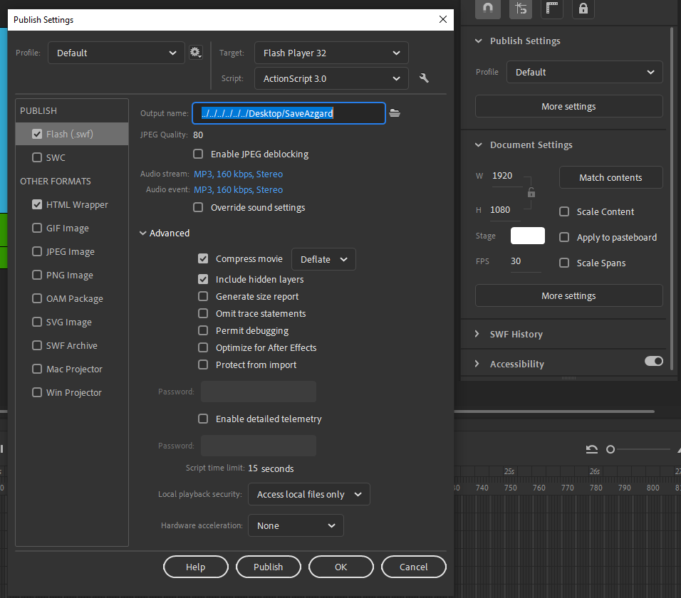
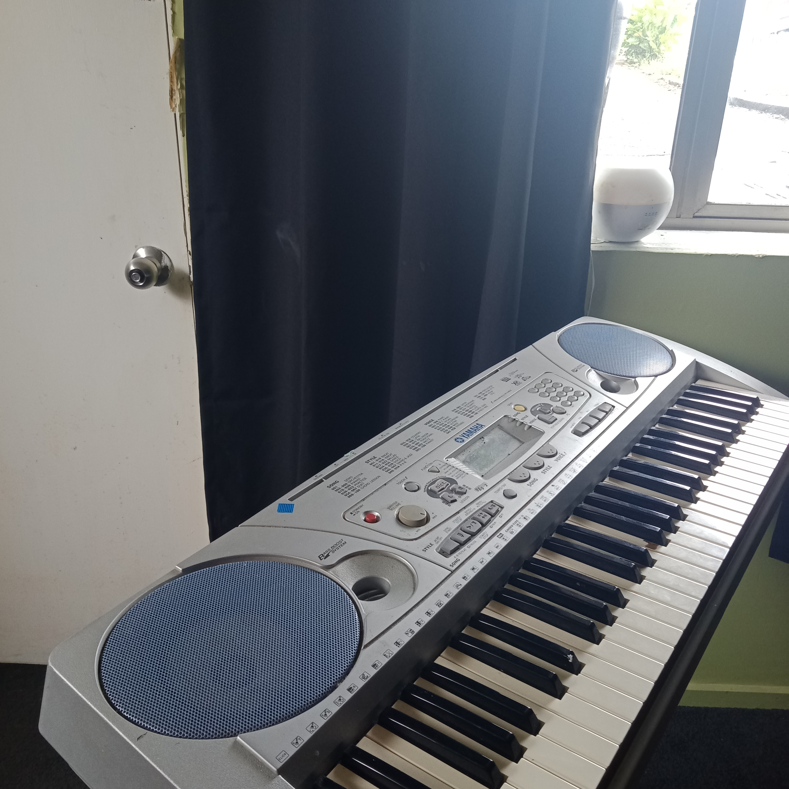
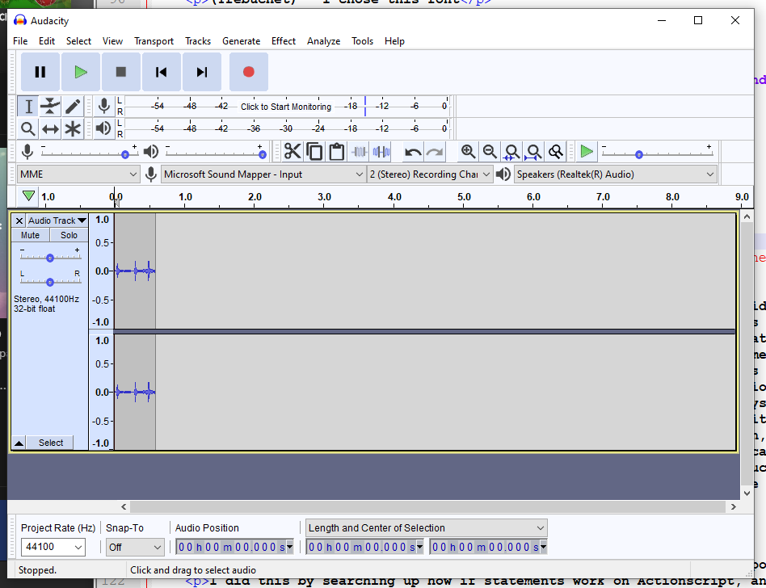
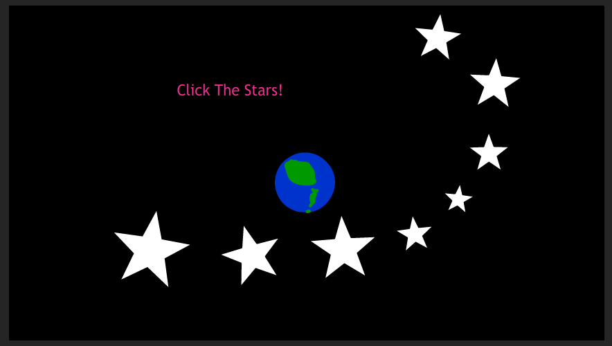
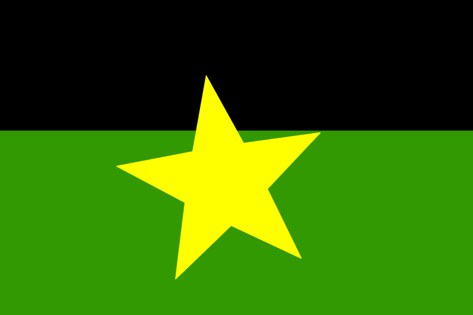

SaveAzgard.swf
Tested with Chrome
Description
In this animation, you start off with a small planet called Azgard, and the animation demonstrates the relative size of Azgard with the other planets in the solar system. (Azgard is just a made up legend that I created for the purpose of this assignment) The user is then told to arrange the planets in order! Answers: The Sun, Mercury, Venus, Earth, Mars, Jupiter, Saturn, Uranus, Neptune, Pluto. Once you get that correct, you will now zoom in to Azgard's closest stars, which you are then instructed to click. (The piano sounds were recorded with my Keyboard). The stars then make their way to Azgard, falling on the ground. The user then needs to click on the star that fell on the ground to help it back up again. Congratulations! The planet is saved!
Planning
  Azgard
Azgard concept art


Fonts
(Trebuchet) - I chose this font

Viner Hand
Vladimir script
Sizing
Output Dimensions: 1920 x 1080
HTML Dimensions: 1024 x 768
File Size: 406 KB
File type: .SWF

Audio


Explanation
I started off with a small dot that I animated, which you can test here.
and eventually the idea came to mind that I should use planets for the subject. So I quickly gathered some ideas about planets and wanted to include them in to my animation. These ideas included, rearranging the order of planets, creating my own planet, give some facts about the solar system, guide the user through space with of course some cool animations, and give the user some puzzles to do. I chose to do it this way to demonstrate a few ways Actionscript can be used, and to get a storyline going and an ultimate purpose or point to the overall animation. I thought that this idea of traveling through space was a good idea, so I ultimately thought of ways that the animation could introduce other planets one-by-one. One idea was to spiral them in a sort of orbit like fashion. Another idea was to introduce them by height (which is what I used in my overall production, because it was easier to animate, as I was afraid that I wouldn't be able to animate the rotation in time.(careful consideration of time was used)) This was not enough of an effect to just use a classic tween to introduce the planets one by one, so I also added a shape tween with the background changing colour over time while the planets are moving to their positions.Once they all arrive the user can drag click them to their correct positions.
I did this by searching up how if statements work on Actionscript, and the program is able to detect if all planets are in their correct position. (by determing the relative distances 'x' value) Example: Earth is greater than both Mercury and Venus, but is less than the other planets. And I did the corresponding if statement for each planet.
We now zoom in on Azgard and see that Azgard has 8 stars that the user is able to click! I thought that this project needed sound, so creating an object, converting it to a symbol, and changing it's on click effect to play a key tone is something I can now do with ease.
Once all stars are clicked, a little animation of the stars journey to Azgard proceeds and the user is left with a star on the ground, which the user needs to then click.
Another animation proceeds and then asks the user if they want to play the animation again.
Which tools/applications I've used and why
I used Adobe Animate because it exported to .SWF and it had heaps of tutorials on YouTube. It was also relatively easy to navigate around.
For piano sounds I used my phone's microphone recording device, and fed it through this music software called Audacity, so I could edit each tone and save them to an .mp3 file with the letter of the note as the filename, example, a.mp3, b.mp3 etc...
How I used the features of these tools/applications
I used layers for each item on the stage, I converted some objects to a symbol so I could change their type to a button and give on click and on hover effects.
I also added actionscript to some of the buttons so that the program jumped to a particular frame when a user clicks on a particular button. I also got the program to stop at certain frames so that the user can freely click on a button at any time, and for each planet I was able to give them a drag and drop function which another piece of actionscript code checks if all planets are in their correct order before changing to the next frame.
Why I believe my use of tools/applications was competent
I believe my use of tools/applications was competent because I learnt alot during the process And if something needs a classic tween, shape tween, motion tween, then I am able to comfortably demonstrate my use of technical skills by applying the tween easily and efficently. I also know how to export to SWF, delete layers, add new layers, combine layers to a folder for ease of use, copy layers, and insert them on to the timeline. I also know (but haven't demonstrated) the use of gotoAndPlay(1) for different frames, and knows how to goto a different scene (but hadn't needed to use it.)
I can also import images/music to the stage library, and use them for a hover-over effect
I am able to change an object to a symbol, and to convert the type in to a button / media clip.
How did I export my work, and why did I do it that way?
I exported my work by Clicking File -> Publish
But before I exported it I went to the properties, and under Publish Settings, click More settings.
Here you can decided where the output file will go
Once decided click publish
I did it this way so the file can be embeded inside a web page.
How I managed assets during project work
For my objects, I managed the assets with layers and folders. I kept all related layers together, as well as put layers in a folder if they were a planet.
For all my files and audio files, I kept them all together inside a folder that I saved close to my portfolio folder, called "MultimediaAssignment"
Research
Drag and drop method / rearrange planets Navigation between frames / scenes 1Navigation between frames / scenes 2 How to code if statements Adding sound to a button when clicked
I also had to find out what colour planets were, and what order they were in the sky, and also how large they were in comparision with each other.
Tools used
Adobe Animate
Piano
Audacity